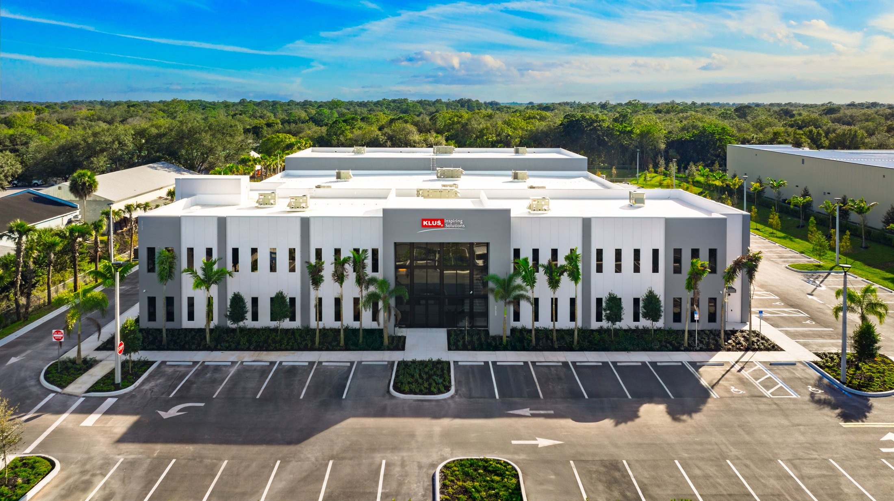
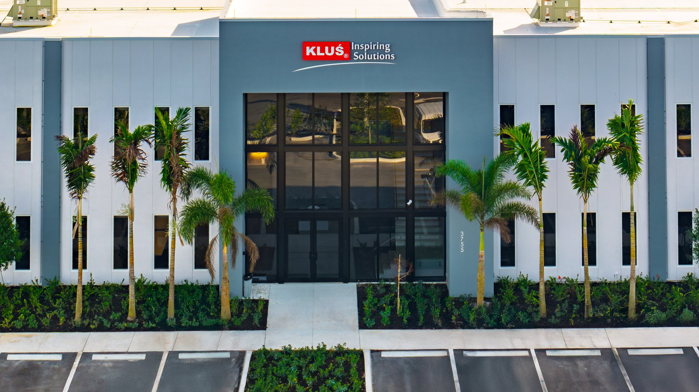

Commercial Showroom · Vero Beach

KLUS is a global manufacturer of LED lighting profiles and systems. Their Vero Beach showroom is where architects, designers, and lighting specifiers come to see product in person. For a company whose entire brand is built on how things look under light, the building itself had to set the tone — and the entrance is the first thing visitors see.
The two-story storefront entrance is the signature element of the facade. Floor-to-ceiling glass framed in dark aluminum, flanked by palm trees, with KLUS's sculptural lighting fixtures visible through the glass from the parking lot. The glazing doesn't just let light in. It puts the product on display before anyone walks through the door.
ACG delivered the complete storefront glazing package for the KLUS showroom — the full-height entrance system, storefront framing, entrance doors, and all associated glass. ESWindows product was spec'd for this project, delivering clean sightlines and the structural performance needed for a two-story storefront span on the Treasure Coast.
A showroom entrance has to be flawless. No visible gaskets out of alignment, no mismatched framing finishes, no hardware that fights the design intent. ACG installed the system to the standard you'd expect when the client's entire business is about visual precision.
Built for Proctor Construction — a Treasure Coast general contractor. ACG's headquarters in West Palm Beach is 70 miles south, putting the Vero Beach market within direct reach of ACG's core operations. The KLUS project is one of multiple commercial builds ACG has completed in Indian River County.

Aerial photography of the finished KLUS Lighting Vero Beach showroom — the entry tower with the KLUS Inspiring Solutions signage, the two-story ESWindows storefront, and the punched window pattern wrapping the building.
Aerial photography by Cook Shell Contractors
Field documentation from the KLUS Lighting Vero Beach build with Proctor Construction. The two-story signature entrance storefront, the punched window facade running along the building's flank, and the interior view from inside the entry — all ESWindows aluminum framing and impact glass, installed by ACG.
From @klusdesignusa — the finished interior of the new facility, built as a working showroom for KLUS LED fixtures. The lobby looks out through the same two-story ESWindows storefront ACG installed; sculptural pendants and illuminated stair lighting fill every line of sight.
Interior photography courtesy of KLUS Design USA · @klusdesignusa
Showrooms, offices, retail — ACG delivers commercial glass installation across Florida. Send your plans and get a complete scope in 48 hours.
Send Us Plans